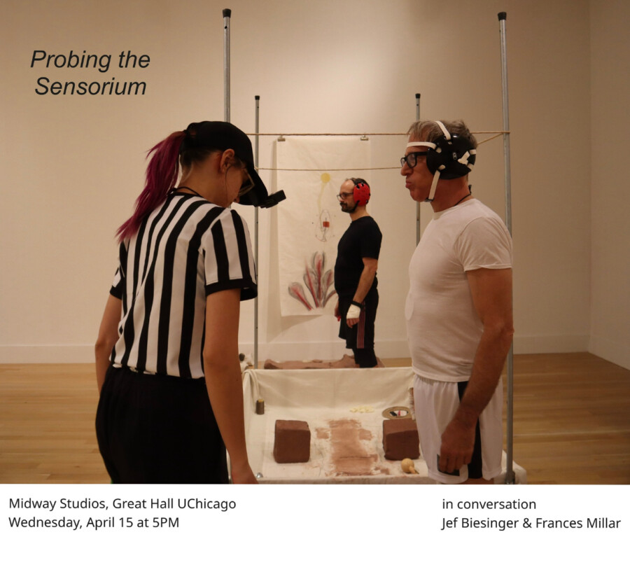

Probing the Sensorium
Join UChicago students Jef Biesinger, MFA ‘26 and Frances Millar, MAPH ‘26 in conversation Wednesday, April 15th, to discuss their collaborative practice and master’s thesis projects revolving around concepts of performance, installation, sensation, and visitor engagement.
Jef, a second-year MFA student, examines the paradoxes of the psyche and the construction of myths in his mixed media practice, anchored in fictional arenas and physical embodiment.
Frances, a MAPH student specializing in art history and curatorial practice, looks to the history of contemporary installation at the Turbine Hall at the Tate Modern, focusing on architectural specificity, spectacle, relational aesthetics, and unique means of audience engagement in Olafur Eliasson’s The Weather Project and Tania Bruguera’s 10,148,451.
Together, they explore typologies of experience, psychological phenomena, and what it means to understand our world through contemporary art making.